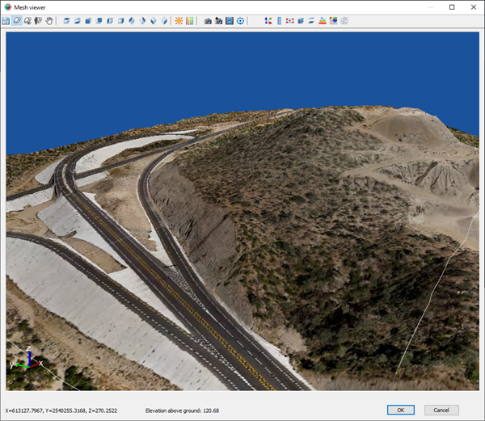
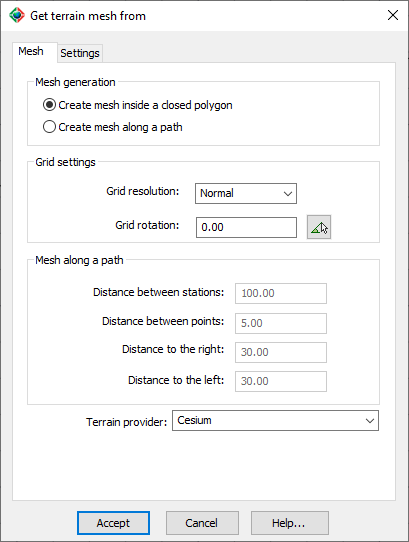
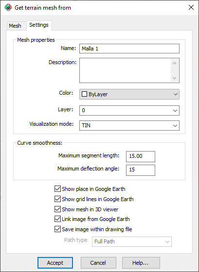

|
|
Toolbar:
Menu: CAD-Earth > Mesh commands > Import terrain mesh from Google Earth
|
|
|
Command line: CE_IMPGEMESH
CAD-Earth version: Plus, Premium. |
.png)
.png)
Command description:
A terrain mesh can be created inside an existing closed polyline or along a polyline path calculating point elevations from Google Earth using this command. By specifying the grid rotation angle and mesh resolution (normal, medium, high, highest) the mesh density and precision can be adjusted. The resulting mesh can be processed to obtain contour lines, dynamic profile and section drawings with text annotations. The terrain mesh can be opened in the Terrain Mesh Viewer for better visualization.

Terrain mesh imported from Google Earth shown in the Mesh Viewer
Dialog box settings (Mesh tab):

Get terrain mesh from Google Earth (Mesh tab)
ØMesh.
•Create mesh grid inside a closed polygon. An existing closed polyline must be selected to create the mesh.
•Create mesh grid along a path. An existing open polyline must be selected. The distance between stations, offset to the right and left and the distance between sample points, must be provided.
ØGrid settings.
•Grid resolution. Specify normal, medium, high or highest resolution. The maximum number of screen shots tiled together are:
|
Resolution |
Max. Number of Tiles |
|
Normal |
1 |
|
Medium |
4 |
|
High |
16 |
|
Highest |
64 |
The number of tiles will be adjusted according to the maximum screen resolution available.
•Grid rotation. You can type a numeric value or select the angle selection button to pick two points in the drawing.
ØMesh along a path.
•Distance between stations. Specify the interval distance along the polyline where the points to the right and left will be calculated.
•Distance between points. Specify the interval distance between points to the right and left to be calculated in each station.
•Distance to the right. Specify the total distance where the points to the right will be calculated.
•Distance to the left. Specify the total distance where the points to the left will be calculated.
ØTerrain provider. Select to import terrain point elevations from Cesium or directly from Google Earth.
Dialog box settings (Settings tab):

Get terrain mesh from Google Earth (Settings tab)
ØMesh properties.
•Name. Enter text to identify the mesh. Must not contain the following characters: | * : ; > < ? , = ` \
•Description. Enter additional information about the mesh (optional).
Color. Select the color for the mesh lines and points.
•Layer. Select the layer where the mesh will be created.
•Visualization mode. The mesh can be displayed in any of the following visualization modes:
TIN: Mesh triangles with continuous lines.
Points: Mesh vertices will be shown as simple points with no size.
Boundary & Points: Triangle sides which are not adjoined to another triangle will be shown. Internal vertices will be displayed as simple points with no size.
Boundary Only: Only triangle sides which are not adjoined to another triangle will be shown, creating one or several outlines.
ØCurve smoothness. If the closed polyline has curved sides they will be converted to straight segments before the polygon is added to Google Earth. The number of resulting segments will be proportional to the maximum segment length and the maximum deflection angle between consecutive segments.
ØShow place in Google Earth. After the mesh triangles are created, Google Earth will automatically be activated and zoomed to the place where the mesh is physically located. A folder will be added to Google Earth's temporary places containing the polygon representing the mesh outline.
ØShow grid lines in Google Earth. Routes will be added to the mesh folder in Google Earth's temporary places for each mesh line processed.
ØShow mesh in 3D Viewer. The Mesh 3D Viewer will be opened showing the mesh with the image from Google Earth and lighting applied.
ØLink image to Google Earth. Screenshots will be taken when sampling surface points in Google Earth to project the final image into the mesh. A file with DDX extension will be created containing image information. The path to this file can be of the following:
•Full path. Image file must be located in the path selected.
•Relative path. The image file must be located in a subfolder or in a parent folder relative to where the drawing file is saved.
•No path. The image file must be located in the same path as the drawing or in any of the support file paths.
ØSave image within drawing file. If this option is checked, the image data will be saved within the mesh, and you will not be asked to save the image file, and the path type selection list (full, relative, no path) will be disabled.
Tips:
•Before using this command the current drawing must be georeferenced to establish the conversion parameters between the drawing and the latitude/longitude coordinates of the corresponding site.
•You can use the 'Show georeferenced drawing objects' command to be sure the drawing is correctly georeferenced before using this command .
•NOTE: If you select to get terrain point elevations directly from Google Earth, you must install v7.3.2 64-bit from this link. Google Earth v7.3.3 and above, doesn't expose a programming interface, so it's not compatible with CAD-Earth. To avoid Google Earth being changed to another version, please rename the file C:\Program Files (x86)\Google\Update\GoogleUpdate.exe to C:\Program Files (x86)\Google\Update\GoogleUpdateBackup.exe. Google Earth has a limit of 5000 points per session. If the mesh has more than 5000 points, Google Earth will be automatically restarted.
•If you open the drawing in another computer, the corresponding DDX file must be located according to the path type selected (at the full or relative path or in the same path as the drawing file). If the other computer doesn't have CAD-Earth installed, you must include the file CVLC_PointGroup.dbx (located in the CAD-Earth installation folder) in the same path as the drawing and load it with the APPLOAD command to be able to visualize the mesh.
•You can use the AutoCAD EXPLODE command to convert the mesh to 3D faces.
Related topics:
•Georeference drawing selecting two points
•Georeference drawing geolocating drawing objects
•Georeference drawing selecting a coordinate system
•Draw cross sections from mesh
•Mesh Viewer
Copyright © 2023 Arqcom Software
Google Earth© is a registered trademark of Google inc. All other trademarks are the property of their respective owners.